Marca do curso de Ciência da Computação
Arquivos oficiais da marca do curso da UNEMAT em Alto Araguaia e Rondonópolis. Use sempre estas versões, sem redesenhar, esticar ou recolorir a marca, e escolha a que tem melhor contraste com o fundo.
Manual de Identidade Visual
Conceito, assinatura, tipografia, cores e todas as aplicações da marca. Edição de 2025, com a marca criada em 2007 e atualizada em 2014 e 2025.
Marca horizontal principal
Versão principal do curso. A assinatura traz o nome do curso e “UNEMAT - Alto Araguaia & Rondonópolis”.
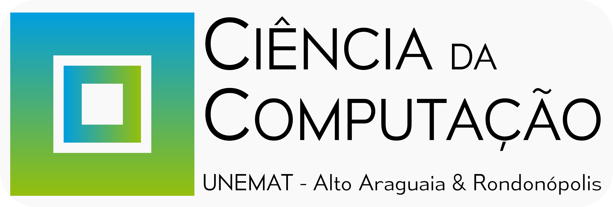

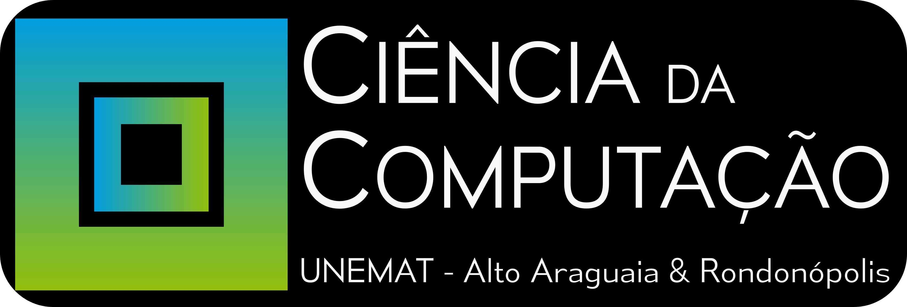


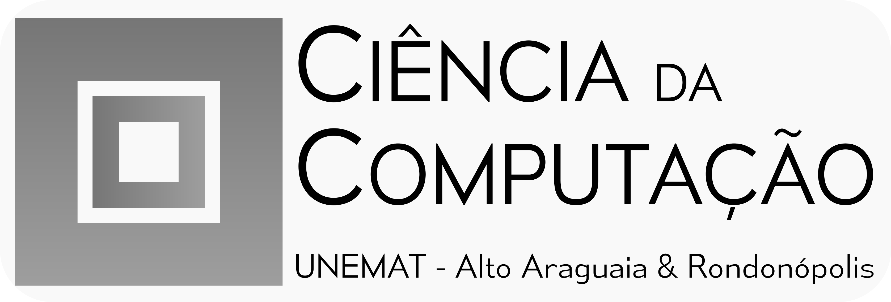

Marca vertical principal
Para espaços mais altos que largos, como perfis, cartazes verticais e capas.
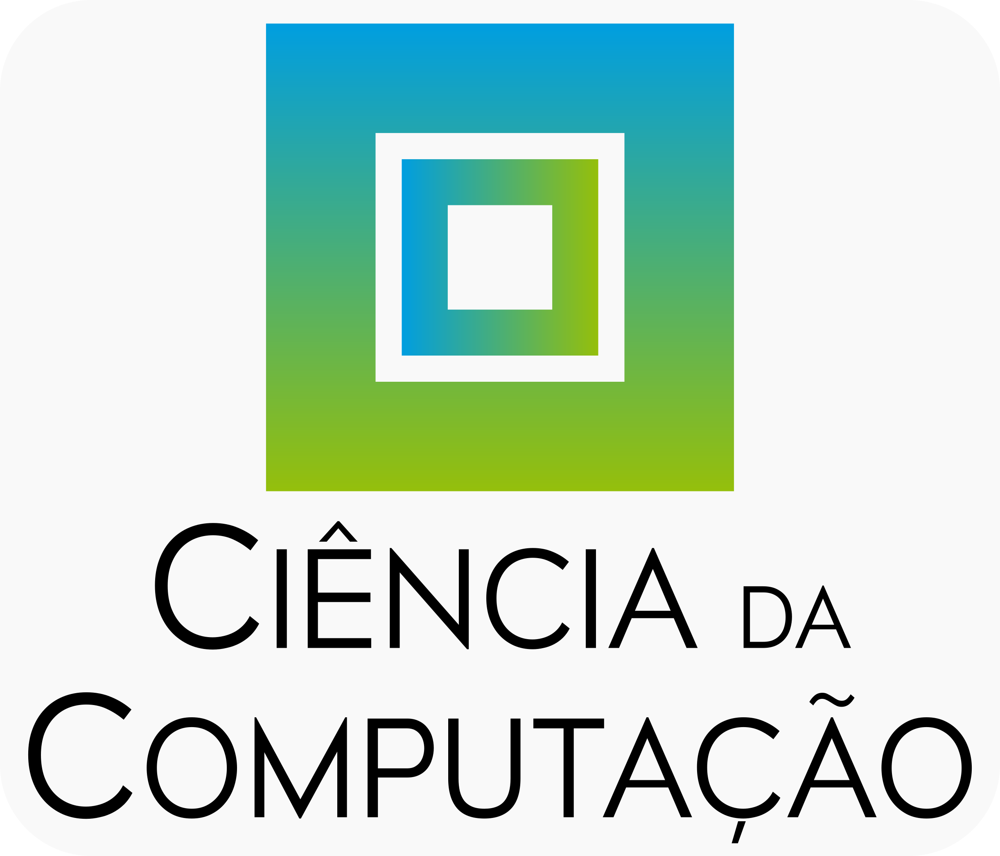

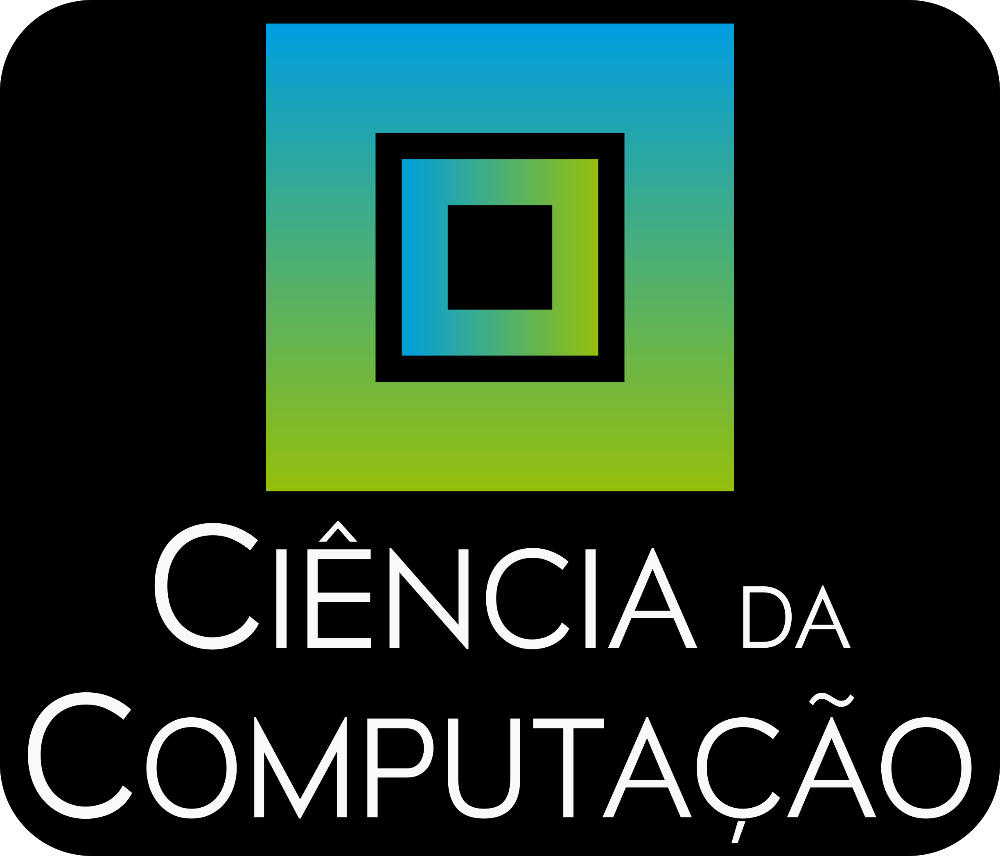

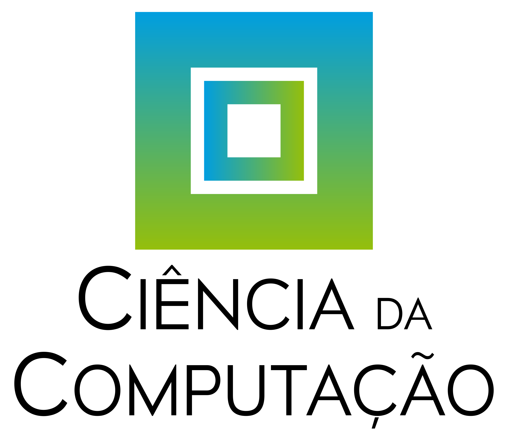

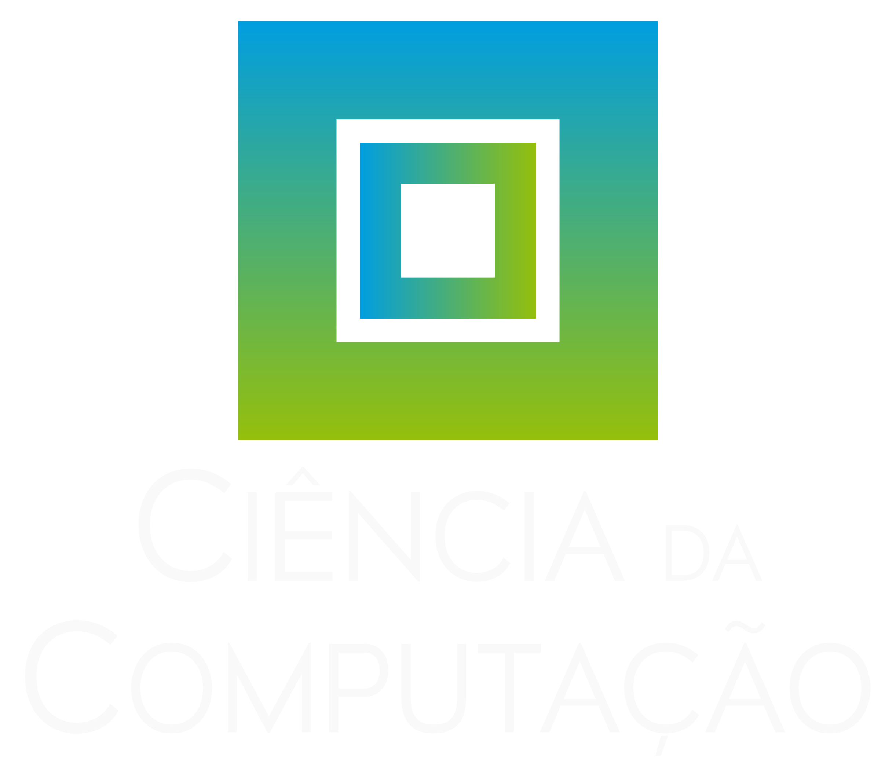

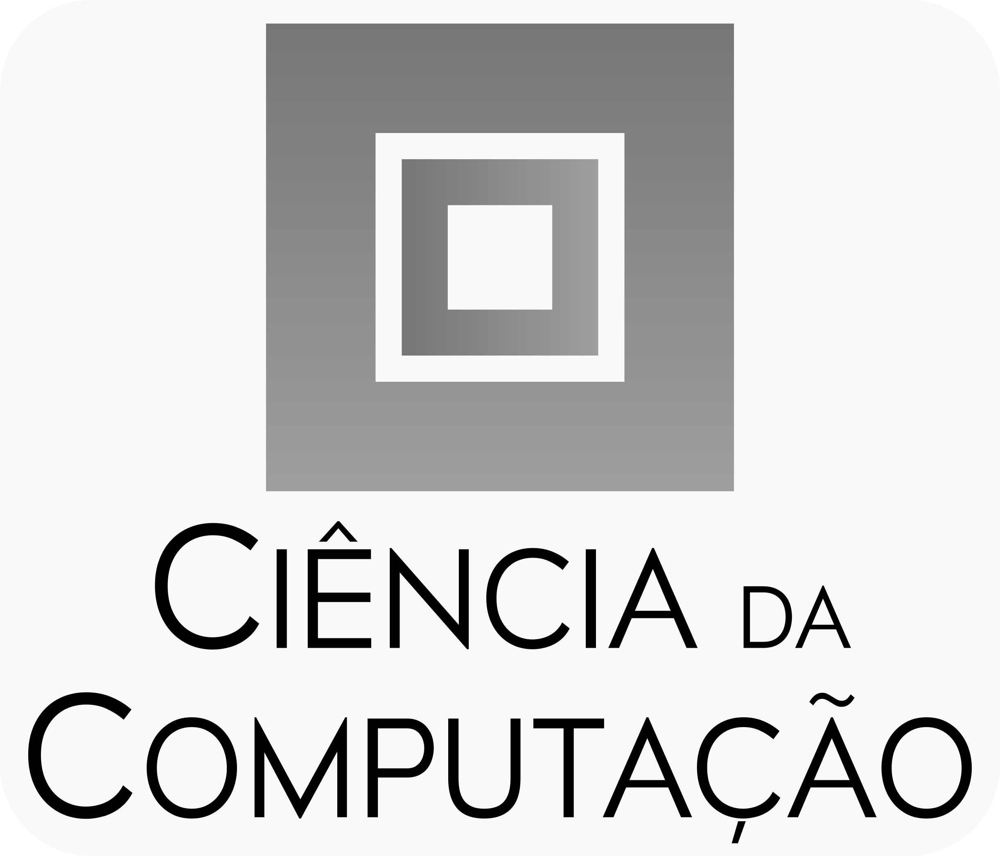

Marca vertical com localidades
A mesma marca vertical, com a linha “UNEMAT - Alto Araguaia & Rondonópolis” abaixo do nome do curso.
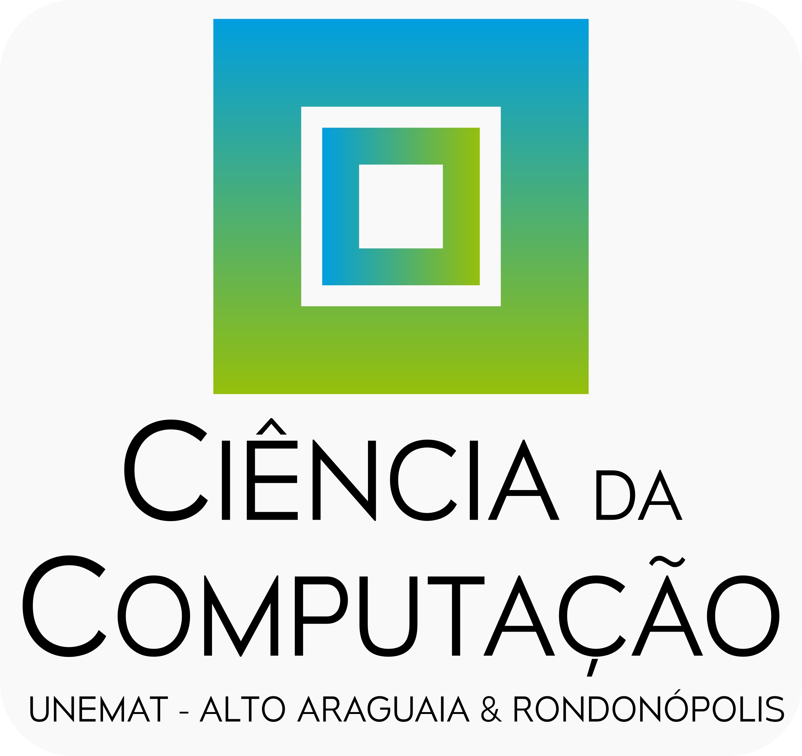

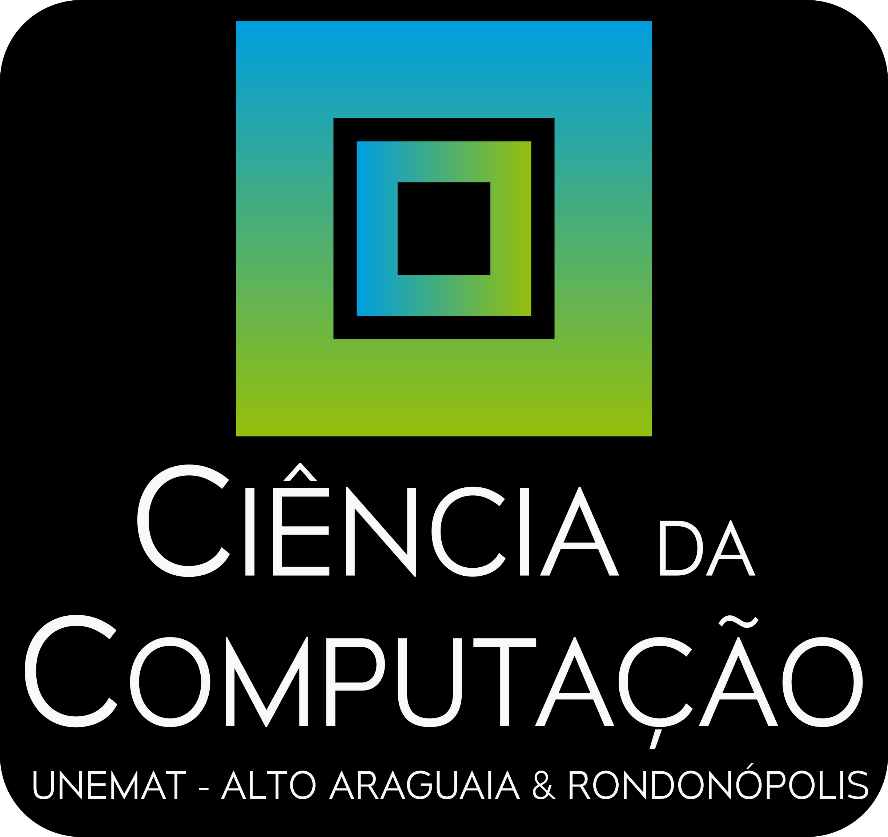

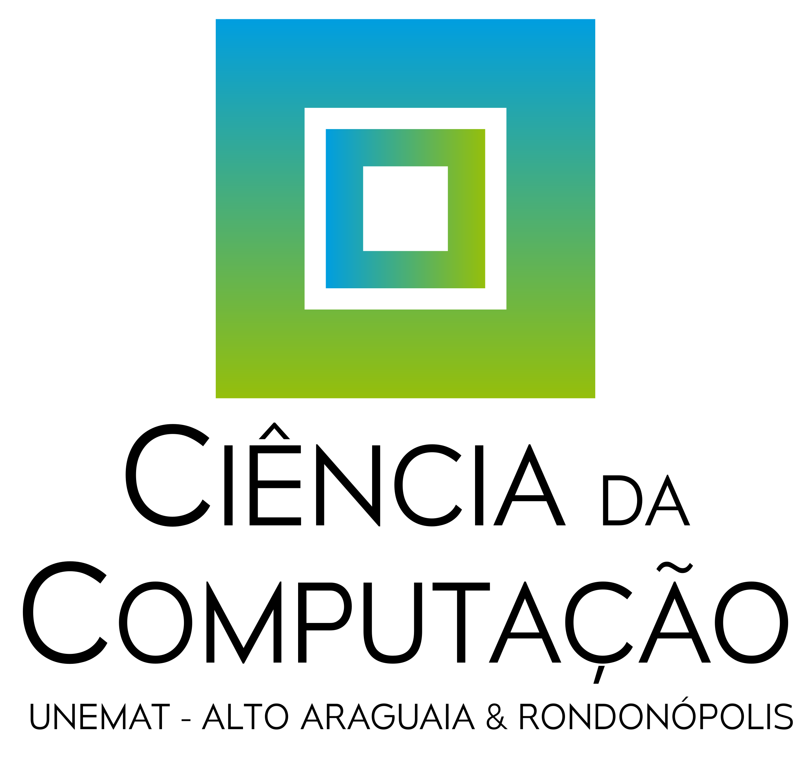

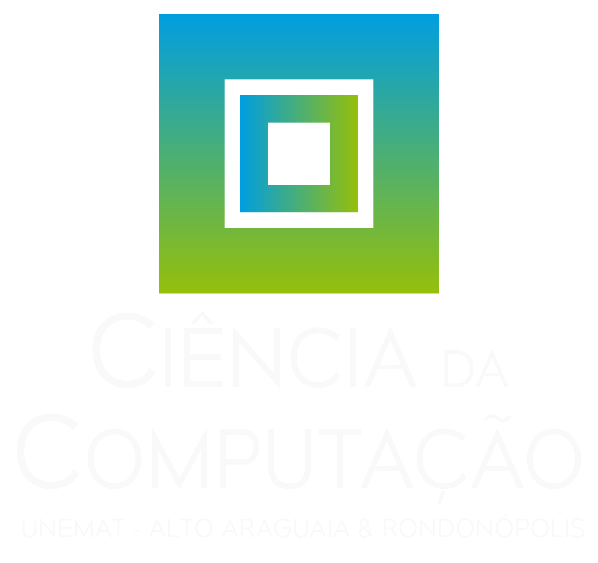

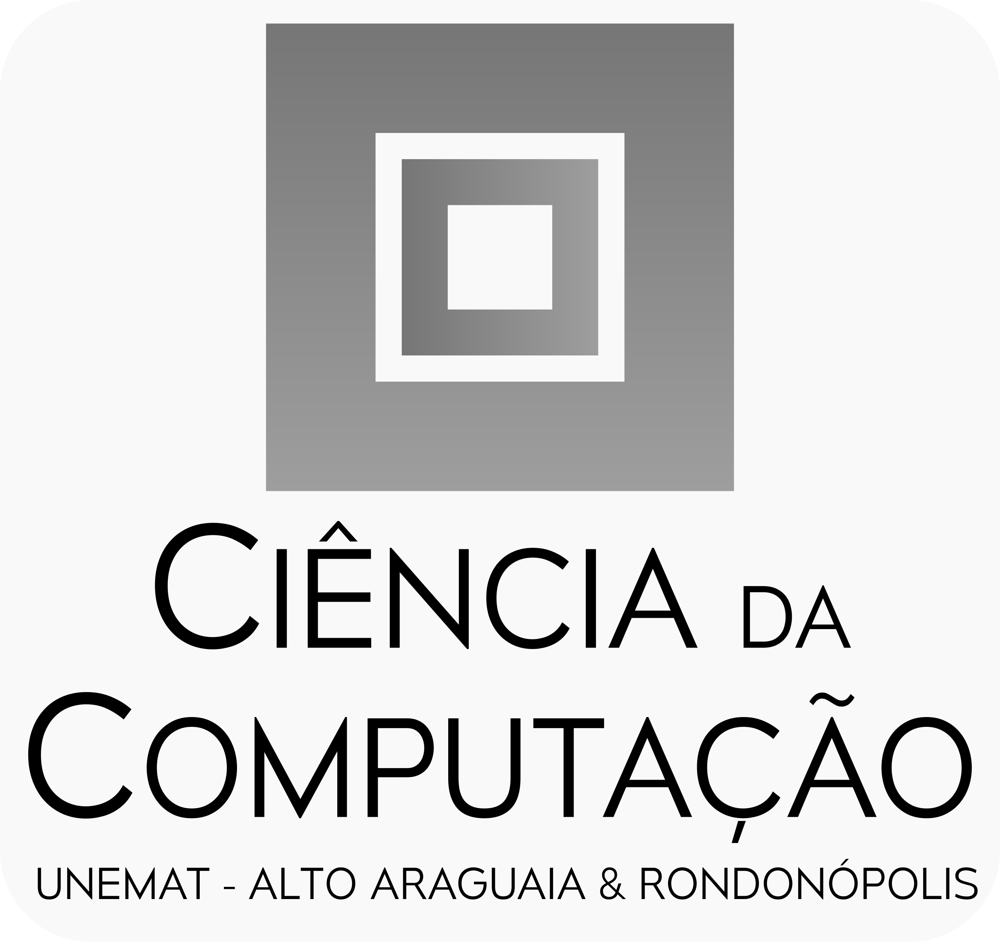

UNEMAT e curso, lado a lado
Assinatura conjunta com a marca da UNEMAT (Câmpus de Alto Araguaia e Câmpus Avançado de Rondonópolis) e a do curso.
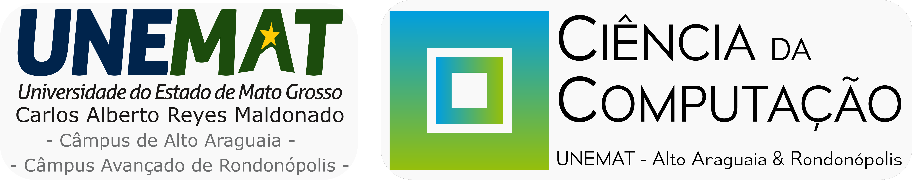

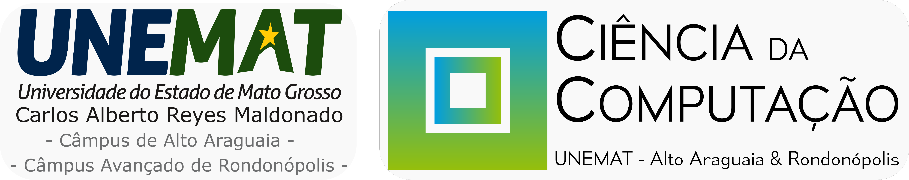

Arquivos vetoriais (SVG)
Preferíveis para impressão e ampliação, porque não perdem qualidade em nenhum tamanho.


Cores
Paleta principal da marca, conforme o manual.
#000000
cor do alto do símbolo
#8DC63F · 100% amarelo + 50% ciano
O símbolo usa um degradê do ciano ao verde. Use sempre os arquivos acima, em vez de refazer o degradê.
Tipografia
A fonte da marca é a Mesmerize Light, sem serifa.